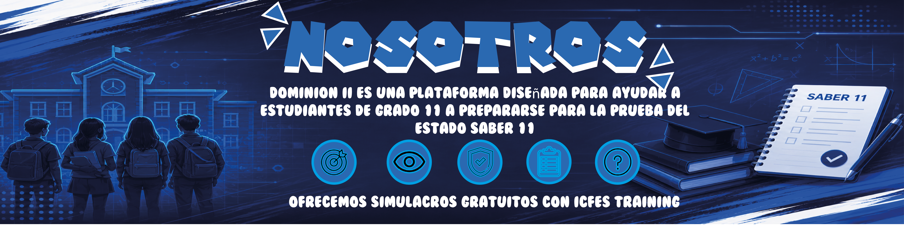
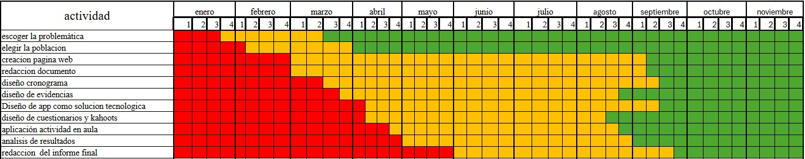

¿Qué hacemos?
Reunimos recursos y actividades para que practicar para Saber 11 sea más fácil y organizado.

Dominion II es una plataforma diseñada para ayudar a estudiantes de grado 10 a prepararse para las pruebas Saber 11.
Ofrecemos simulacros, estrategias de estudio y seguimiento de progreso para que cada estudiante avance con confianza.


.png)


¿Cómo puede una estrategia de fortalecimiento en inglés y matemáticas contribuir al mejoramiento del desempeño de los estudiantes en la prueba Saber 11?

El logo de DOMINION II representa el conocimiento, el progreso y la superación académica de los estudiantes de grado 10 en su preparación para las pruebas Saber 11. El libro simboliza el aprendizaje, la flecha roja representa el avance y la determinación, y el nombre identifica el proyecto educativo.
Reunimos recursos y actividades para que practicar para Saber 11 sea más fácil y organizado.
A estudiantes de grado 10 que quieren reforzar sus conocimientos y prepararse con confianza.
Con práctica, buenos hábitos de estudio y revisión de los temas que necesitan más atención.
Queremos que cada estudiante encuentre una manera clara y cercana de aprender, practicar y reconocer su progreso.
Conoce nuestros contactos